Flaunt Your Flawless Complexion with ABClinic Skin Tags & Mole Removal Treatment
Skin tags and moles are common skin growth that occurs on the skin. While harmless, many opt to remove it with the use of home remedies or picking. However, this method causes more harm and infections. There are safer and more effective ways to address this issue.
What is Skin Tags & Mole Removal Treatment & How Does It Work?
Both skin tags and moles are common, benign growths that are usually harmless but can be removed for cosmetic reasons or if they cause discomfort. Skin tags and mole removal treatments help to safely remove these imperfections without causing discomfort or scarring.
At Dr. Abby Clinic, before undergoing any skin tag or mole removal treatment, our doctor will determine the most appropriate approach based on your specific situation.
Discover Our Skin Tags & Mole Removal Solutions
Surgical Excision
A minor dermato-surgical procedure that uses a punch biopsy to cut out the mole and stitch the skin closed. Numbing injection will be applied prior to the procedure, for the best patient comfort.
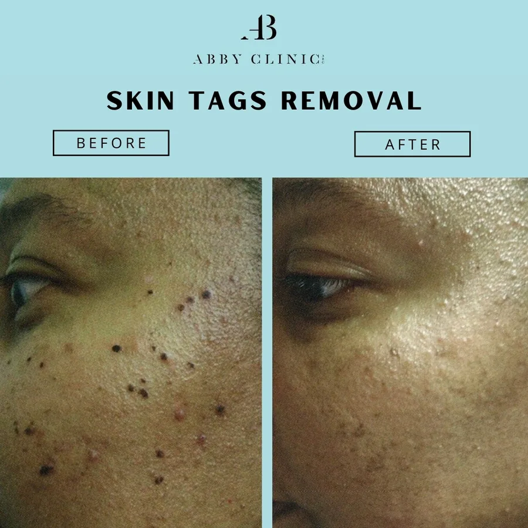
Electrocautery
This procedure involves using a small, precise tip that delivers radiofrequency energy to remove the lesion. Before the treatment, a topical numbing cream or a small injection will be applied to ensure comfort.
Electrocautery
Fast, affordable, and non-surgical method of mole removal.
What is Electrocautery and How Does It Works?
Electricity is used in electrocautery, a non-surgical treatment, to heat bodily tissue. This painless procedure involves passing a direct or alternating, minute electrical current via an electrode made of a tough metal wire to living tissue to help remove unwanted skin growth.
Electrocautery is a quick, inexpensive, non-surgical alternative to get rid of moles. The treatment usually only takes a few minutes, leaves no scars, and doesn’t need anesthesia or recuperation time. It is safe on all skin types and removes the concern of surgical downtime.
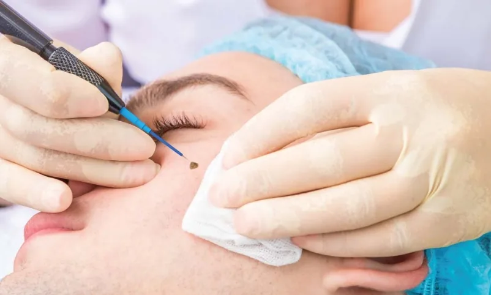
Skin Concerns Treated
Moles
Skin Tags
Warts
Seborrheic Keratosis (Benign skin growths, often referred to as age spots or liver spots)
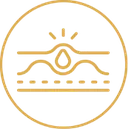
Cherry Angiomas (Small red, benign skin growths caused by dilated blood vessels.)
Nosebleeds (Epistaxis) (Exposed blood vessels to prevent frequent nosebleeds.)
Xanthelasma (Yellowish cholesterol deposits that form around the eyes.)
Actinic Keratosis (Precancerous skin lesions that develop from prolonged sun exposure.)
Verrucae (a contagious and often painful wart)
Fast, instant result, and no downtime
The best method for eliminating moles and skin tags recommended by Dr. Abby Clinic is Electrocautery. Moles and skin tags can be promptly removed using electrocautery, allowing you to return to work or school without worrying about how they will look. The treatment is painless, safe, and reliable.
More than just skin tag & mole removal
In addition to the removal of moles, electrocautery is effective in treating various disorders. This technique is occasionally applied to remove tumors and other aberrant tissue growth. If you frequently experience nosebleeds, a blood vessel in your nose that is exposed is probably to blame. Warts on various parts of the body, including the genitalia, are commonly treated using this method.
The Benefits of Electrocautery
- Minimal scarring
- Can be completed in a single sitting
- Can be completed in a single sitting
Why Our Electrocautery is the Right Choice for Skin Growth Removal
Electrocautery is suitable to remove skin growths like moles and warts. At Dr Abby Clinic, you’ll receive personalized care and expert treatment for fast, safe results that look natural.

Non-Surgical
No need for surgery, stitches, or injections.
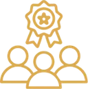
Expert Care
Performed by skilled professionals for safe and precise results.

Painless
Minimal discomfort during the quick procedure.

Personalised Plans
Treatment is tailored to your skin needs.
Post-Treatment Care
Clear guidance to help you heal smoothly.
Scar-Free
Leaves little to no visible scarring.

Fast Results
The treatment is done in minutes with immediate results.
Get Quick and Safe Skin Solutions with Electrocautery
Book a consultation to get professional advice on whether Electrocautery is right for you. We’ll review your skin concerns, answer your questions, and ensure the treatment is a safe and effective option. Take the first step towards radiant skin by scheduling today!
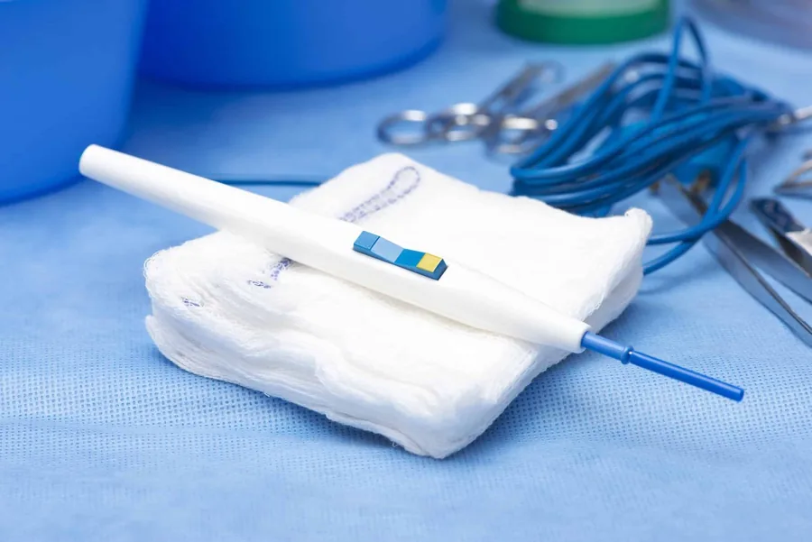

Consultation
We’ll talk about your skin concerns, explain the treatment, and answer your questions.

Confirming Your Eligibility
We’ll check if Electrocautery is right for you based on your skin type and condition.

Begin Your Journey
If you’re eligible, we’ll schedule your treatment. It’s quick, painless, and you’ll see results fast!
Electrocautery vs Surgical Excision
Here’s how Electrocautery compares to Surgical Excision treatment.
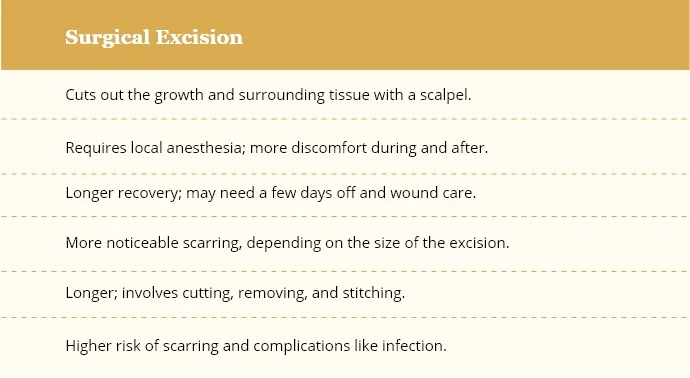
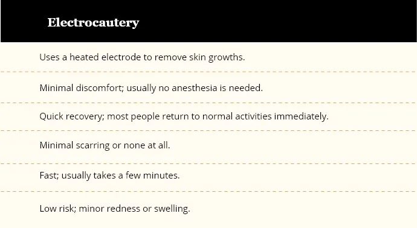
Before & After Electrocautery Treatment
Take a look at the before and after comparisons of our patients who underwent the electrocautery treatment.
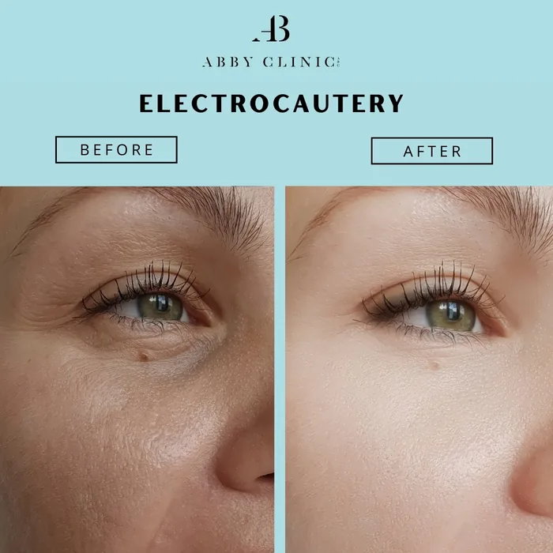
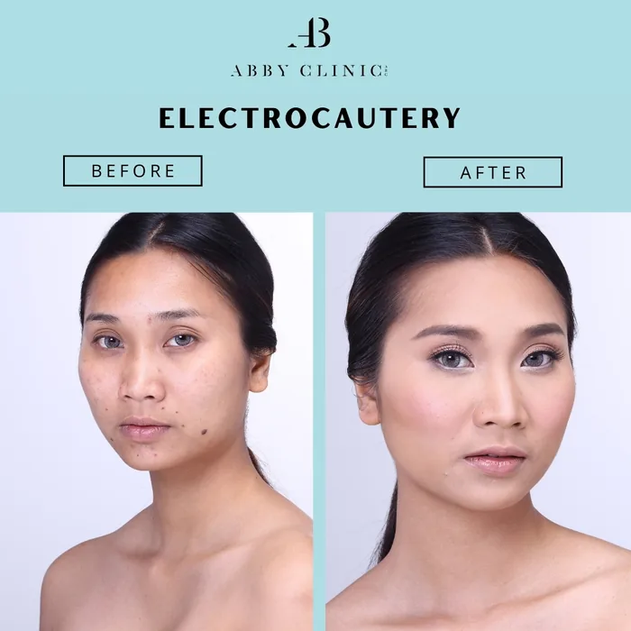
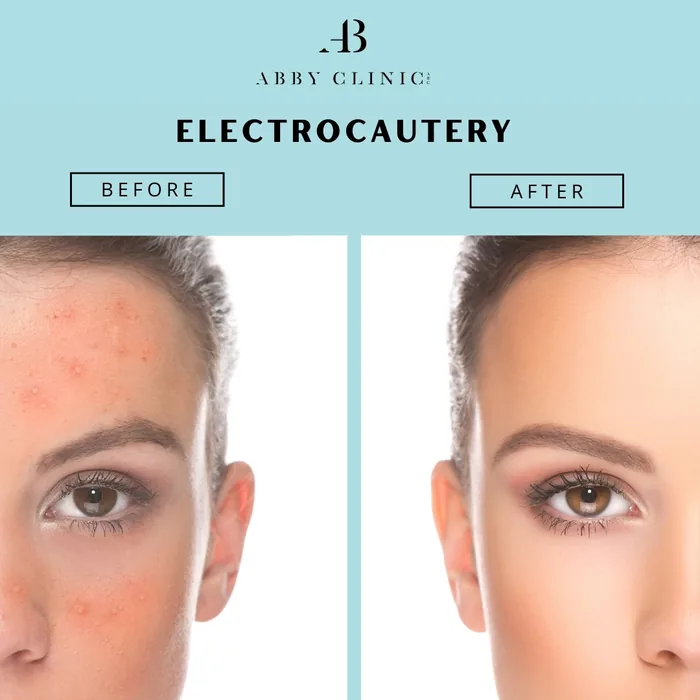
Frequently AskedQuestions (FAQs) About Electrocautery
Our FAQs address common concerns and provide clear, helpful information for those considering Electrocautery treatment.
Electrocautery is a non-surgical procedure that uses a heated electrode to remove unwanted skin growths, such as moles, skin tags, and warts. It’s a quick, painless method that leaves minimal scarring and requires no recovery time.
Most patients experience minimal discomfort during Electrocautery. The procedure is generally painless, and any discomfort is usually brief and manageable. Anesthesia is typically not required.
The procedure is relatively quick, often taking just a few minutes depending on the area being treated. You can usually resume your normal activities immediately afterward.
In most cases, only one treatment session is needed to achieve the desired results. However, the number of sessions may vary based on the size and type of skin concern being treated.
Post-treatment care is straightforward. You should keep the treated area clean and avoid picking at any scabs. Follow any specific aftercare instructions provided by our specialists to ensure proper healing.
Yes, Electrocautery is safe for all skin types and tones. Our specialists will assess your skin to ensure the procedure is suitable for you.
Results can be seen almost immediately, with the treated area starting to heal within a few days. Full results will become more apparent as the skin continues to heal over the following weeks.
Surgical Excision
A technique for mole or birthmark removal allows for the removal of deeper and larger skin lesions.
What is Surgical Excision and How Does it Work?
Deep, huge moles and birthmarks can be removed by a small surgical plastic surgery procedure called surgical excision. The method gives the surgeon complete discretion over the surgical site to be excised and creates a unique elliptical excision form to speed up wound healing.
Sutures will be used to seal the wound. Over time, it provides immediate and permanent eradication for the patient’s benefit and aids in making the skin clear and smooth.
Quick skin tag removal, instant results
This minimally invasive procedure gives a speedy outcome because the skin tag is immediately removed. It causes relatively little discomfort or agony and completes the procedure swiftly. Skin tags have a very slim possibility of regenerating, leading to a smoother complexion.
Is the procedure uncomfortable? What to expect?
A local anesthetic is typically used before removing skin tags and moles. Thus, depending on the size, the treatment would cause little to no pain. Usually, a scab will develop over the mole area following treatment for it. Depending on the size and shape of the mole, it will spontaneously peel off after 7 to 14 days.
The Benefits of Surgical Excision
- Reduces the loss of normal tissue
- Reduces the loss of normal tissue
- Helps improve self-confidence
- Helps boost self-esteem
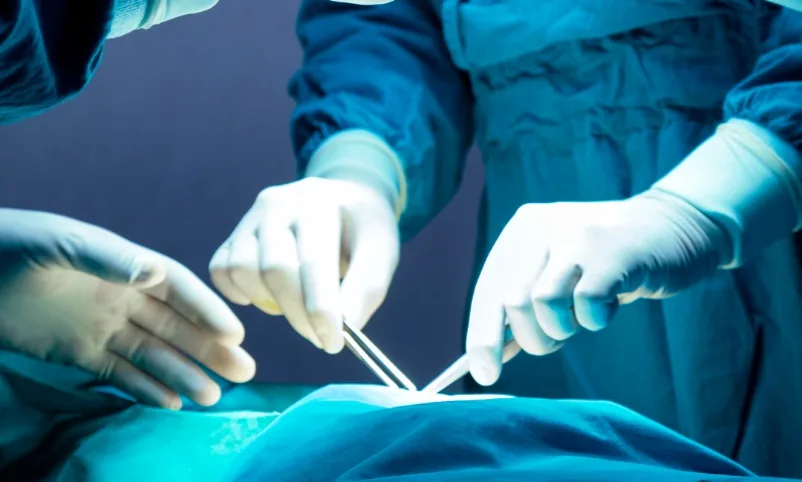
Skin Concerns Treated
Deep moles
Birthmarks
Skin Tags
Cysts

Jowls and neck laxity
Benign skin lesions
Achieve a Permanent Solution for Skin Imperfections with Surgical Excision
Discover why our surgical excision service is the trusted choice for removing moles, birthmarks, and skin tags with precision and care.
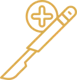
Permanent Removal
Long-lasting results for moles, birthmarks, and skin tags.
Immediate Results
Instant improvement, with smoother, clearer skin.
Expert Surgeons
Skilled specialists ensure the best care.

Quick Healing
Special technique ensures faster healing and minimal scarring.

Safe and Controlled
Precise and safe procedure for effective outcomes.
Personalised Treatment
Tailored to each patient’s needs and goals.
Minimally Invasive
Minimal discomfort and quick recovery time.
Comprehensive Aftercare
Full support to aid healing and reduce scarring.
Clear Your Skin with our Surgical Excision
Ready to achieve smooth, clear skin? Book a consultation to find out if our surgical excision is the right treatment for you. Our expert team will evaluate your skin concerns, discuss your goals, and determine the best approach to help you achieve the results you desire. Don’t wait—schedule your consultation today and take the first step towards flawless skin!
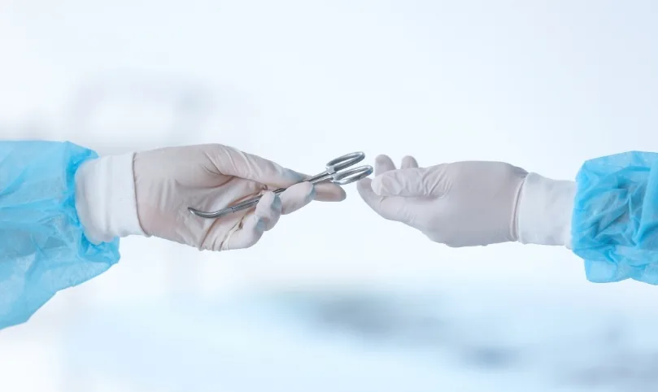
Consultation
Meet with us to discuss your skin concerns and explore treatment options.
Confirming Your Eligibility
We’ll check if you’re a good candidate for the treatment to ensure safety and effectiveness.
Begin Your Journey
Once approved, we’ll schedule your procedure and prepare you for a smooth experience.
Before & After Surgical Exicision at Dr Abby Clinic
Our patients have reported improvements after undergoing our surgical excision procedure.
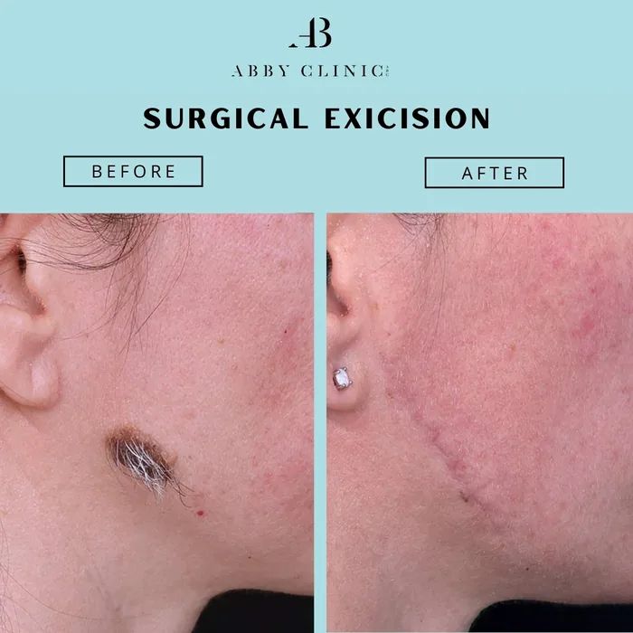
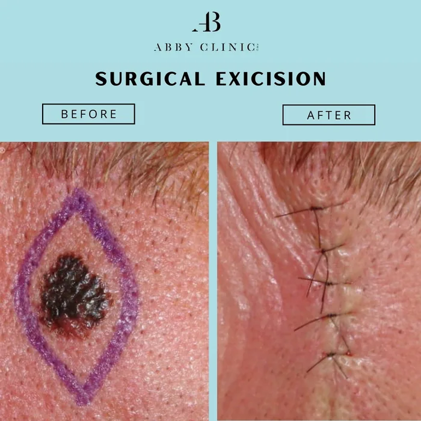
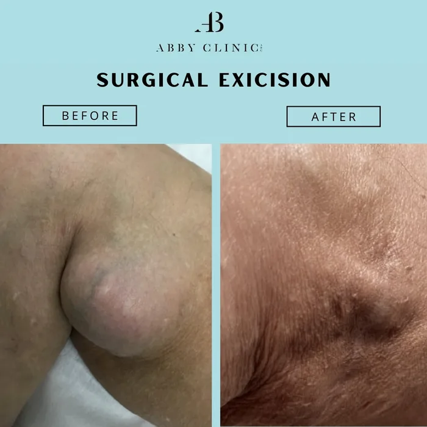
Frequently AskedQuestions About Surgical Excision
We gathered all the FAQs to address common concerns and provide clear, helpful information you need.
Surgical excision is a procedure used to remove deeper and larger skin lesions, such as moles, birthmarks, and skin tags. It involves removing the affected area with precision to achieve a clear, smooth skin surface.
Most patients experience minimal discomfort during the procedure because a local anaesthetic is used. You may feel a slight sensation of pressure, but significant pain is rare.
The procedure typically takes between 30 minutes to an hour, depending on the size and location of the lesion being removed.
You may have a scab over the treated area, which will naturally fall off in 7 to 14 days. The area might be slightly red or swollen initially, but this will subside as it heals.
While complications are rare, potential risks include infection, scarring, and temporary discomfort. Our team will provide you with detailed aftercare instructions to minimise these risks.
Healing time varies by individual and the size of the excision. Generally, you can expect the area to heal within 2 to 4 weeks, with full recovery typically achieved within a few months.
Some scarring is possible, but it is usually minimal. Our skilled surgeons use techniques to reduce scarring and ensure a more even skin appearance.
During your consultation, our team will assess your skin condition and overall health to determine if surgical excision is suitable for you. We will discuss all options to ensure you receive the best care.
You will receive specific pre-procedure instructions, including avoiding certain medications or skincare products. Follow these instructions carefully to ensure the best results.
You can book a consultation by contacting us through our website, phone, or email. Our team will help schedule a convenient time for you to discuss your concerns and determine the right treatment plan.
Skin Tags & Mole Removal Treatment Solutions That Work For Your Skin
Take a look at some of the before-after photos.
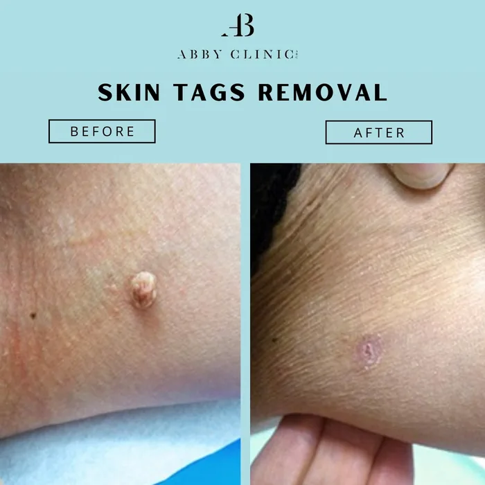
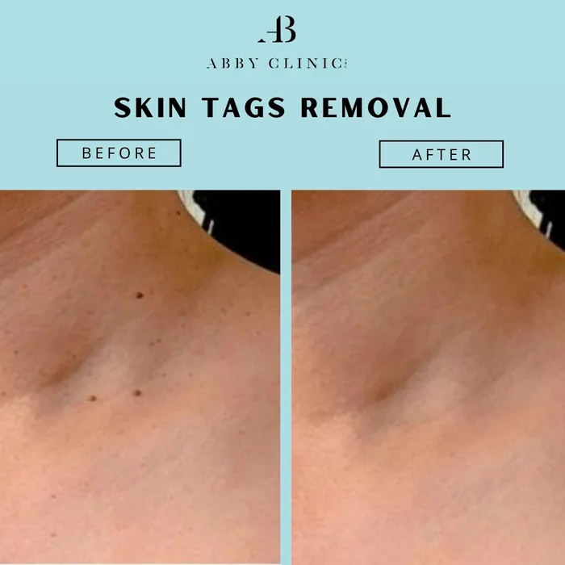
Why ChooseDr Abby Clinic
Treatments are performed by LCP certified doctor and accredited therapists
Using FDA approved treatments
Transparent price and rate with no hidden or additional cost
Focusing on results and customer satisfaction
Featured Awards & Achievements
 Top 21 Best Aesthetic Clinics in Malaysia
Top 21 Best Aesthetic Clinics in Malaysia Harpers Bazaar Aesthetics Award 2019 & 20213
Harpers Bazaar Aesthetics Award 2019 & 20213 Top 20 Best Aesthetic Clinics in Klang Valley
Top 20 Best Aesthetic Clinics in Klang Valley Top 20 Best Aesthetic Clinics in Malaysia
Top 20 Best Aesthetic Clinics in Malaysia Top 10 Laser Hair Removal Clinic KL
Top 10 Laser Hair Removal Clinic KLExperience Your Personalised Treatment Today
Great skin doesn’t happen by chance, it happens by appointment.
Book your slot now and let’s make it happen.